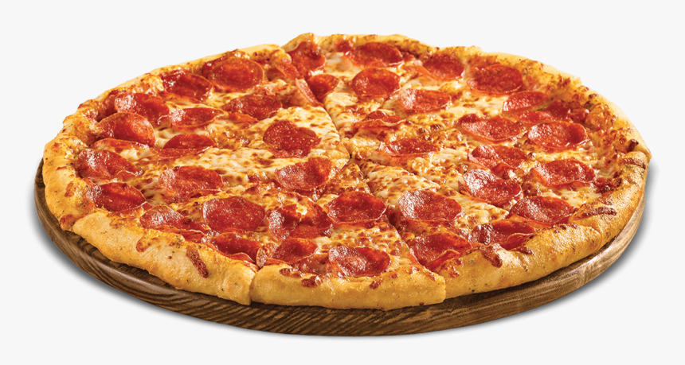

Homemade Pepperoni Pizza

Description
Quick, Easy and Delicious-Homemade pizza crust and tomato sauce has never been easier-and this recipe for pepperoni pizza produces a delicious classic!
Ingredients
Toppings:
- 1/2 (12 oz) can tomato paste
- 1 TSP dried oregano, crushed
- 1 TSP dried basil, crushed
- 1/2 TSP garlic powder
- 1/2 TSP onion powder
- 1/2 TSP sugar
- 1/2 TSP salt
- 1/4 TSP black pepper
Crust:
- 3 1/4 cups flour
- 2 (.25 OZ) envelopes Rapidrise yeast
- 1 TBSP sugar
- 1 1/2 TSP salt
- 1 1/3 cups very warm water
- 1/3 cup oil
Toppings:
- 1 (6 OZ) package pepperoni
- 1 cup shredded mozzarella cheese
Steps
- For sauce: Combine all sauce ingredients with 1/2 cup water in a medium bowl; set aside for flavors to develop while making crust. Freeze remaining paste .
- For crusts: Combine 2 cups of flour with the dry yeast, sugar and salt. Add the water and oil and mix until well blended (about 1 minute). Gradually add enough remaining flour slowly, until a soft, sticky dough ball is formed.
- Knead for about 4 minutes, on a floured surface, until dough is smooth and elastic. Add more flour, if needed.
- Divide dough in half. Pat each half (with floured hands) into a 12-inch greased pizza pan OR roll dough to fit pans.
- For pizzas: Preheat oven to 425 degrees F. Top crusts with sauce, pepperoni and cheese.
- Bake for 18 to 20 minutes until crusts are browned and cheese is bubbly. For best results, rotate pizza pans between top and bottom oven racks halfway through baking.